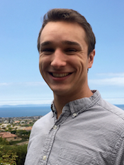
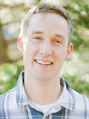
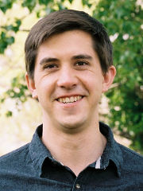
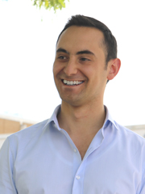
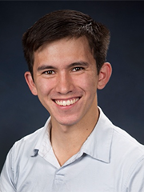
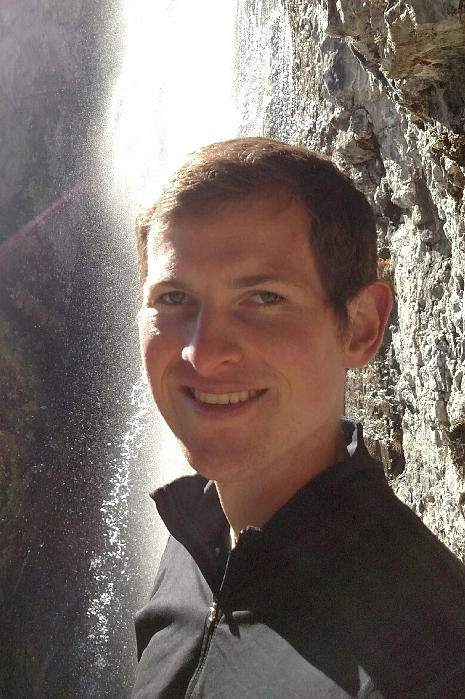
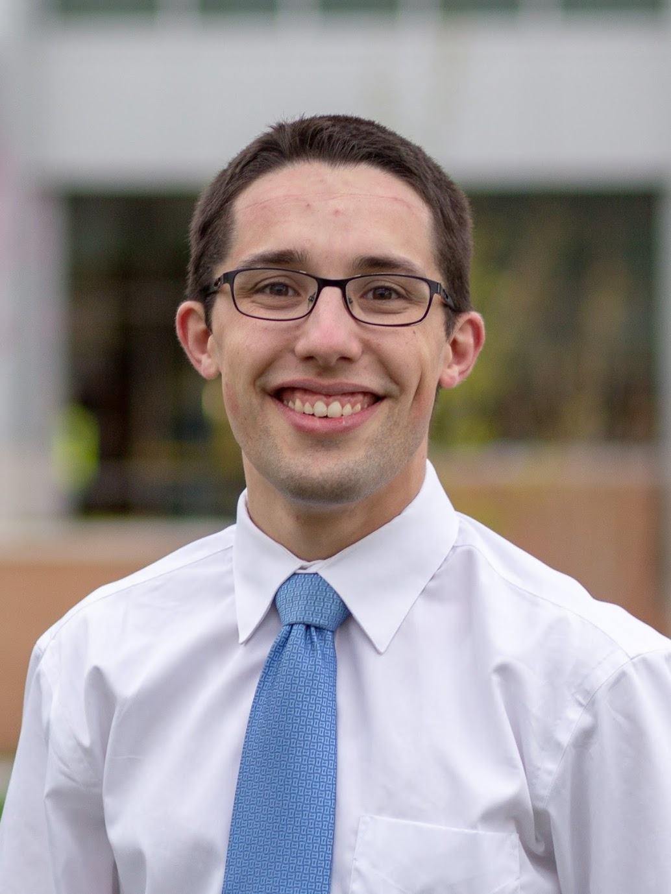
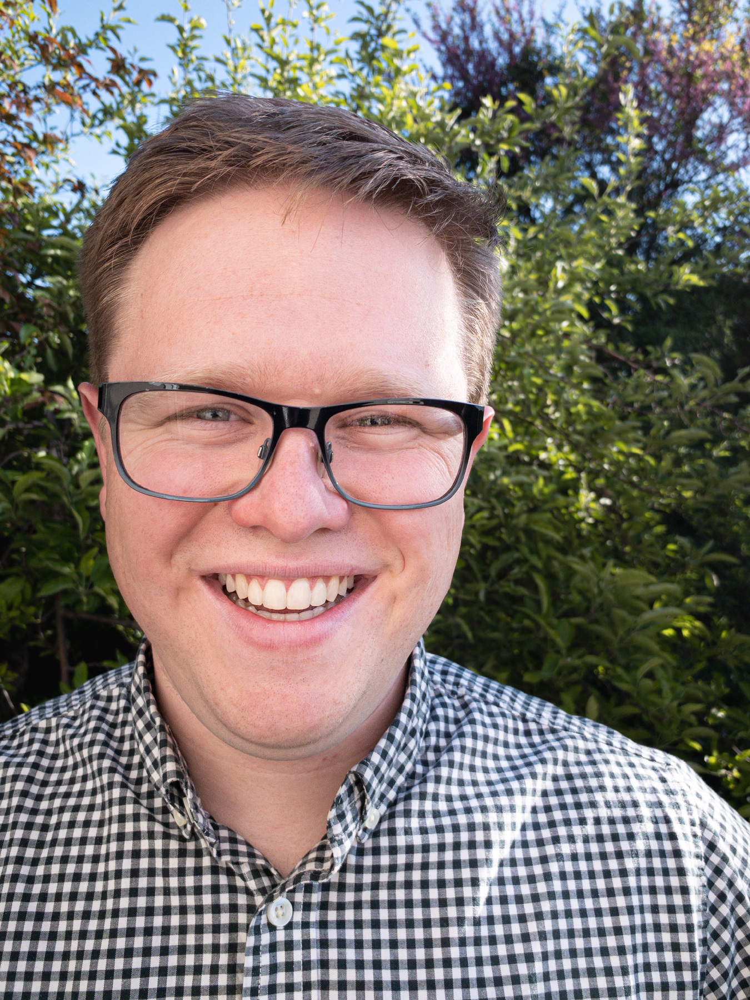
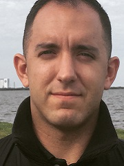
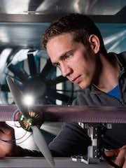

Flight, Optimization, and Wind Laboratory
© 2020. All rights reserved.
Flight, Optimization, and Wind Laboratory
© 2020. All rights reserved.

Andrew Ning is interested in the complex tradeoffs that occur in engineering design. The design of wind energy and flight systems involves strong interactions across multiple disciplines. Optimization is a useful tool in exploring these design decisions. In addition to design applications, he is interested in developing fundamental algorithms and methodologies for efficient aerodynamic analysis and optimization.
Dr. Ning received his PhD and MS degrees from Stanford University in the Aircraft Aerodynamics and Design Group. After graduation he worked at the National Renewable Energy Laboratory on wind turbine aeroelastic analysis and optimization. He loves engaging in ideas and learning with the excellent students and faculty at BYU. Outside of engineering he enjoys mountain biking, soccer, basketball, and reading.

Jared Thomas is interested in engineering and business. He is pursuing both a PhD in mechanical engineering and an MBA at Brigham Young University (BYU).
Jared’s engineering interests include design optimization, systems engineering, and renewable energy. He is developing new techniques and tools for solving the wind farm layout optimization problem in the pursuit of creating more efficient wind farms. He has created and contributed to several open-source tools including WISDEM/FLORISSE, OpenMDAO, and WakeExchange.
Jared’s primary business interests are strategy and product management. He has worked with local and international companies doing business consulting. Jared is an MBA intern at Coreform, a tech startup in Provo, Utah, and is a partner in the BYU Marriott School’s Cougar Strategy Group (CSG).
Jared received his BS degree from BYU in 2015, with minors in music and mathematics. He enjoys spending time with his wife and kids exploring the outdoors, making music, and experimenting with sourdough.

PJ Stanley is researching optimization of mixed turbine wind farms. He loves optimization of wind energy because it involves solving challenging problems, and can be used to make the world a better place. Many people can be helped with further developments in this field.
PJ is from St. Louis Missouri, and graduated from BYU with a BS in Mechanical Engineering in 2016. He is currently working towards a PhD. He loves sports, especially basketball and baseball, as well as reading science fiction and spending time with friends.

Taylor McDonnell has many interests, the foremost of which is UAVs. He is currently researching HALE UAV aeroelasticity and plans to extend this research into aeroservoelasticity. He is excited about the many potential applications of UAVs and hopes his work will offer valuable insights in developing HALE UAVs that can remain airborne for months at a time. He earned his BS degree in Mechanical Engineering from BYU in 2016. In his spare time he enjoys movies, music, sports, hiking, and flying remote control aerial vehicles.

Judd Mehr graduated from BYU with a Bachelor of Science degree in April of 2016, majoring in Mechanical Engineering with a minor in Mathematics. He is currently researching the multidisciplinary design and optimization of High Altitude Long Endurance aircraft. Judd is most recently from American Fork, Utah, but has spent time living in California, Illinois, Texas, and Virginia. In addition to engineering, he enjoys designing and building projects at home, hiking, cycling, camping, cooking, and going on small adventures.

Eduardo Alvarez is interested in the aerodynamics of electric VTOL aircraft, or “flying cars.” His past experience has involved compressible flow in shock tubes, solid propulsion in experimental rocketry, fluid-structure interaction along the larynx, and reliability of wind turbines. He is now researching propeller-propeller and propeller-wing aerodynamic interactions involved in the design of electric aircraft. After completing the common core of Science and Engineering at the University of Chile, he earned his B.S. degree in Mechanical Engineering from BYU-Idaho in 2017. In his spare time he enjoys jazz music, experimental rocketry, and poetry.
An overview of his research is available in this notebook.

Teagan Nakamoto grew up on a chicken farm on the Big Island of Hawai’i and graduated April 2017 from BYU with his BS Mechanical Engineering degree and a minor in editing. He is researching applications of convex optimization to wind farm design. Among a great many other things, Teagan enjoys reading Brandon Sanderson books, running mountainous trails, eating Spam musubis, and listening to metal remakes of Disney songs.

Ryan Anderson is intrigued by the design of eVTOL aircraft, particularly utilizing computational aerodynamics and acoustics models. This interest began with an Honors thesis at the conclusion of his BS Mechanical Engineering degree at BYU in 2019. He has experience researching the effects of weather on the aerodynamic and battery performance of fixed and rotary wing drones, and assisted in the development of a fixed wing drone for the AUVSI-SUAS competition in 2019. He is currently pursuing a PhD in Mechanical Engineering at BYU. In his spare time, Ryan enjoys playing basketball, rock climbing, hiking, and making music with friends.

Tyler Critchfield is interested in electric VTOL aircraft design optimization to reduce acoustic environmental impact, with the goal of promoting public acceptance and eventual integration of urban air mobility into modern society. Tyler is from Puyallup, Washington, and graduated from BYU in 2019 with a B.S. in Mechanical Engineering and a minor in Business Management. In his free time he enjoys hiking, family history, sports, and playing board games with family and friends.

Adam Cardoza is interested in the physics that describe the world of motion, especially flight. He enjoys building multifaceted aerodynamic models to explore the capabilities of different aircraft. Current research interests include computational modeling, systems optimization and algorithm development. Adam graduated from Brigham Young University with a Bachelors of Science in Mechanical Engineering and minors in Mathematics and Ballroom Dance. He enjoys camping, climbing and cooking. Recently, he has begun building and flying remote control aircraft.

Nicholas F. Baker graduated from UNLV Cum Laude with a B.S. in Computer Science in 2008. He then departed on a two-year LDS mission and upon his return commissioned as an officer in the United States Marine Corps. He is currently a Captain in the USMC Reserves and as a reservist returned to UNLV to complete a second B.S. Magna Cum Laude in Mathematics in 2016. He is currently at BYU working towards an MS degree in Mechanical Engineering researching wind turbine efficiency and optimization.

Austin Schenk is intrigued by the complex aerodynamics that drive aircraft design, specifically that of high-performance helicopters. He is excited about his current research into propeller on propeller interactions with applications in vertical takeoff and landing vehicles. Austin is passionate about engineering and has always had a curiosity for learning how things work. Outside of the lab, he enjoys spending time with family and friends, golfing, water skiing, and mountain biking.